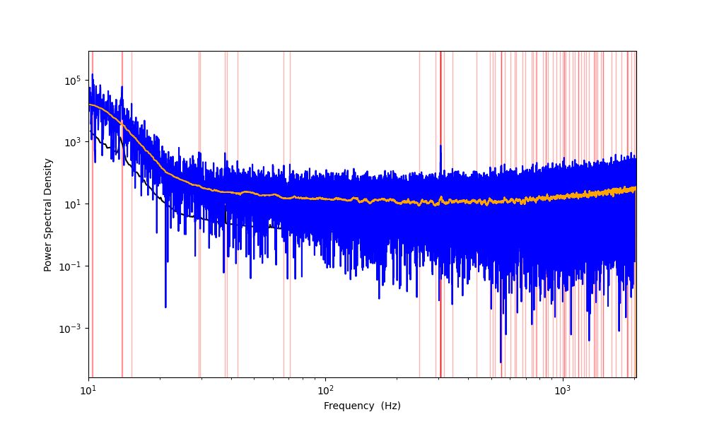
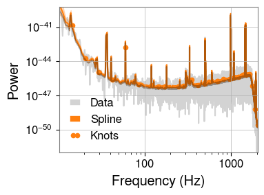
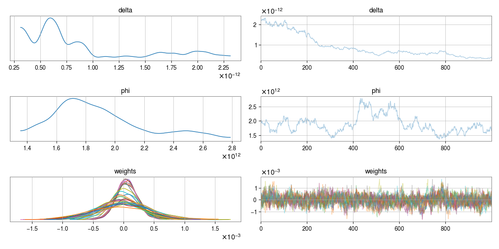

LVK#
Demo on estimating LVK detector noise PSD using spline models.
Plots#
Raw PSD Estimate

Fitted Noise Model
{kind=link}
Fitted Noise Model (PDF)
Noise + Spline Fit Overlay
{kind=link}
Trace Plot
{kind=link}
Source Code#
import os
import arviz as az
import matplotlib.pyplot as plt
import numpy as np
from log_psplines.arviz_utils import (
get_periodogram,
get_spline_model,
get_weights,
)
from log_psplines.datatypes import Periodogram, Timeseries
from log_psplines.example_datasets.lvk_data import LVKData
from log_psplines.mcmc import run_mcmc
from log_psplines.plotting import plot_pdgrm
from log_psplines.psd_diagnostics import PSDDiagnostics
from log_psplines.psplines import LogPSplines
FMIN, FMAX = 20, 1024
out = os.path.join("out_lvk_mcmc_nuts")
os.makedirs(out, exist_ok=True)
lvk_data = LVKData.download_data(
detector="L1",
gps_start=1126259462,
duration=4,
fmin=FMIN,
fmax=FMAX,
threshold=10,
)
lvk_data.plot_psd(fname=os.path.join(out, "lvk_psd_analysis.png"))
# rescale the PSD to a better scale to work with
power = lvk_data.psd / np.nanmax(lvk_data.psd) * 1e-3
pdgrm = Periodogram(
freqs=lvk_data.freqs,
power=power,
)
pdgrm = pdgrm.cut(FMIN, FMAX)
idata_fname = os.path.join(out, "inference_data.nc")
if os.path.exists(idata_fname):
print(f"Loading existing inference data from {idata_fname}")
idata = az.from_netcdf(idata_fname)
else:
spline_model = LogPSplines.from_periodogram(
pdgrm,
n_knots=len(lvk_data.knots_locations),
degree=3,
diffMatrixOrder=2,
knot_kwargs=dict(knots=lvk_data.knots_locations),
)
# plot initial fit with optimised weights
fig, ax = plot_pdgrm(
pdgrm=pdgrm, spline_model=spline_model, figsize=(12, 6)
)
ax.set_xscale("linear")
fig.savefig(os.path.join(out, f"test_spline_init.png"))
idata = run_mcmc(
pdgrm,
sampler="nuts",
n_samples=2000,
n_warmup=2000,
outdir=out,
rng_key=42,
knot_kwargs=dict(knots=lvk_data.knots_locations),
)
fig, ax = plot_pdgrm(idata=idata, figsize=(12, 6))
ax.set_xscale("linear")
fig.savefig(os.path.join(out, f"test_mcmc.png"))
fig, ax = plot_pdgrm(idata=idata, figsize=(12, 6))
ax.set_xscale("log")
fig.savefig(os.path.join(out, f"test_mcmc_log.png"))
fig, ax = plot_pdgrm(idata=idata, figsize=(12, 6), show_knots=False)
ax.set_xscale("linear")
fig.savefig(os.path.join(out, f"test_mcmc_no_knots.png"))
fig, ax = plot_pdgrm(idata=idata, figsize=(12, 6), show_knots=False)
ax.set_xscale("log")
fig.savefig(os.path.join(out, f"test_mcmc_log_no_knots.png"))
# get posterior median PSD
spline_model = get_spline_model(idata)
pdrgm = get_periodogram(idata)
weights = get_weights(idata)
ln_splines = np.array([spline_model(w) for w in weights])
# combine to median
posterior_median_psd = np.exp(np.median(ln_splines, axis=0))
#
diag = PSDDiagnostics(
ts_data=lvk_data.strain,
fs=lvk_data.fs,
psd=pdrgm.power,
freqs=pdrgm.freqs,
reference_psd=posterior_median_psd,
)
diag.plot_diagnostics(f"{out}/psd_diagnostics.png")
fig, ax = plot_pdgrm(idata=idata, figsize=(12, 6), show_knots=True)
ax.set_xscale("log")
fig.savefig(os.path.join(out, f"test_mcmc_log_no_knots.png"))
# plt.show()
import jax
import jax.numpy as jnp
import numpy as np
import pandas as pd
from log_psplines.datatypes import Periodogram, Timeseries
URL = "https://raw.githubusercontent.com/bilby-dev/bilby/main/bilby/gw/detector/noise_curves/aLIGO_O4_high_asd.txt"
def load_lvk_psd() -> Periodogram:
df = pd.read_csv(URL, comment="#", sep="\s+", header=None)
freq, asd = df[0].values, df[1].values
# rescale ASD so numbers are not too small
asd = asd / asd.min()
return Periodogram(freq, asd)
def create_white_noise(sampling_frequency, duration):
number_of_samples = duration * sampling_frequency
number_of_samples = int(np.round(number_of_samples))
number_of_samples = int(np.round(duration * sampling_frequency))
number_of_frequencies = int(np.round(number_of_samples / 2) + 1)
frequencies = np.linspace(
start=0, stop=sampling_frequency / 2, num=number_of_frequencies
)
norm1 = 0.5 * duration**0.5
re1, im1 = np.random.normal(0, norm1, (2, len(frequencies)))
white_noise = re1 + 1j * im1
# set DC and Nyquist = 0
white_noise[0] = 0
# no Nyquist frequency when N=odd
if np.mod(number_of_samples, 2) == 0:
white_noise[-1] = 0
# python: transpose for use with infft
white_noise = np.transpose(white_noise)
frequencies = np.transpose(frequencies)
return white_noise, frequencies
def get_lvk_noise_realisation(sampling_frequency=4096.0, duration=4.0):
psd = load_lvk_psd()
white_noise, frequencies = create_white_noise(sampling_frequency, duration)
with np.errstate(invalid="ignore"):
# setup iterp1d over PSD
colored_noise = (
np.interp(frequencies, psd.freqs, psd.power) ** 0.5 * white_noise
)
return Periodogram(frequencies, np.abs(colored_noise) ** 2)